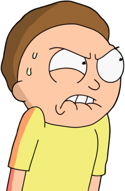
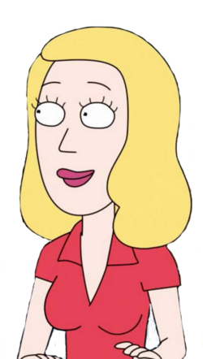

PERSONAJES
Rick Sánchez
Es un hombre que ha pasado gran parte de su vida viajando a través de diversas dimensiones, en el tiempo y por muchas regiones del universo. Para él, la Tierra se llama Planeta Tierra de la Dimensión C-137. Es irresponsable, asocial, chiflado, ambicioso y desconsiderado ante su propia familia, criticando en numerosas ocasiones a su yerno Jerry por ser un idiota (ademas de desempleado). Suele llevar a Morty a sus viajes, para que pueda ser tan inteligente como él y no se vuelva igual de idiota que su padre. Llega al punto de no distinguir el bien del mal, ya que a veces trabaja con delincuentes espaciales y otros. Sin embargo, la principal razón por la cual Rick dice necesitar a su nieto Morty en sus aventuras por el espacio, es debido al hecho de que sus ondas cerebrales consiguen camuflar las de Rick de alguna manera, dando a entender que Morty es muy poco inteligente al punto de ser casi un retrasado.
Morty Smith
Su nombre real es Mortimer Smith apodado como "Morty" y es uno de los protagonistas principales de la serie animada Rick and Morty. Tiene constantes aventuras con su abuelo Rick Sánchez para ayudarlo siendo la mayoría de las ocasiones en contra de su voluntad y saliendo lastimado en casi todas ellas.
Beth Smith
Es la hija de Rick pero técnicamente es la hija de un Rick muerto en un accidente, a lo que el Rick y Morty originarios de la Dimensión C-137 ocuparon sus lugares. Es la esposa de Jerry y la madre de Summer y de Morty (quién murió en el mismo accidente que Rick). Su vida ocurrida antes del Píloto de la serie es poco conocida, se sabe que fue abandona de pequeña por su padre por razones desconocidas. Anhelaba ser cirujana cardíaca pero a los 17 años de edad fue a una fiesta con Jerry y quedó embarazada de Summer, pero aún así logro ir a la universidad y graduarse como cirujana de caballos, aunque ella ha admitido que contemplaba la posibilidad de abortar a Summer.
jerry smith

Jerry Smith es uno de los personajes principales de Rick y Morty . Jerry es el esposo de Beth Smith , el padre de Summer Smith y Morty Smith , y el yerno de Rick Sanchez . Los primeros seis episodios de la temporada 1 presentaron a Jerry Smith (dimensión de Cronenberg) , mientras que el Jerry actual nació y habita en la dimensión de reemplazo . . Jerry es a menudo conocido como un perdedor. Constantemente intenta encontrar una carrera en vano, dejando a su esposa Beth como el sostén de la familia. Sin embargo, es capaz de heroísmo en tiempos de crisis y ha salvado la vida de su familia en algunas ocasiones. El matrimonio de Jerry con Beth es a menudo difícil e inestable, lo que resulta en que los dos finalmente se divorcien en el estreno de la temporada 3 . Jerry pasaría la mayor parte de la temporada viviendo solo y deprimido en un pequeño apartamento, hasta que él y Beth se reconcilian en el final de la temporada 3 , aunque actualmente se desconoce si Beth con la que se volvió a casar es un clon o la Beth original.